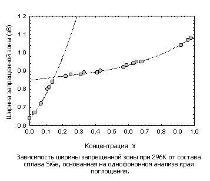
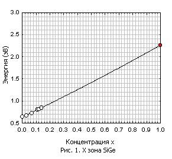
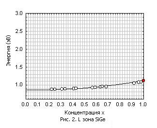

|
Зонная структура SixGe1-x характеризуется переходом
на нижнем краю зоны проводимости от Ge-подобной [111]-симметрии к Si-подобной
симметрии при x ~ 0.15. Рисунок ниже показывает зависимость ширины запрещенной
зоны от состава SixGe1-x ([3])

В нашем апплете, мы получили зависимость энергетических долин зоны проводимости от
состава сплава в X-точке, L-точке, и G-точке следуя процедуре,
описаной ниже:

[X значения энергии]
Как показано на рис. 1 выше, белые точки - значения экспериментальных данных
из [3], а красные точка - энергия X-точки чистого
кремния ([5] и [6]), мы
интерполировали эти данные полиномом второй степени и получили зависимость для энергии
X-точки:
EX = a1 + b1*x + c1*x*x
, где a1 = 0.861, b1 = - 0.0658 и
c1 = 0.3185.
[L значения энергии]
Точно так же, мы получили энергию L-точки для SiGe, интерполируя данные из
[3] (белые точки на рис. 2), вместе с энергией L-точки
чистого кремния ([5] и [6]) отмеченной
красной точкой на рис. 2. Энергия L-точки SixGe1-x определилась
следующей формулой:
EL = a2 + b2 * x + c2 *x
*x, где a2 =0.635, b2=1.505,
c2 = 0.1205.
[G значения энергии]
Диаграмма G-точки для SiGe была получена
простой линейной экстраполяцией энергетической зоны G
чистого кремния ([5] и [6]) и
чистого германия ([1]), которые отмечены на рис. 3
красной и синей точкой соответственно. Поэтому G зона
SixGe1-x, описана в этом апплете как:
EG = a3 + b3
* x, где a3 = 0.805 и b3 = 2.615
.
|